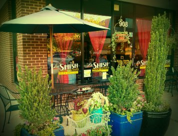

Cafe and Catering

We’re home to an astonishing array of authentic, home-cooked Greek and Middle Eastern delicacies. We make all our food from scratch using the finest fresh and imported ingredients. Delight your palette with a wide selection of Mediterranean dishes:
Shish kebab, Hummus, Falafal, Stuffed grape leaves, Tabbouli, Turkish coffee, Baklava, Tiramisu.
La Shish is located at ReedyCreekPlaza (Food Lion)
908 NE Maynard Road
Cary, NC 27513
Daily Specials
Soup
Mediterranean sweet potato stew
Sweet potatoes, carrots, celery, corn and peas in a rich broth filled with middle eastern spices. 3.50 cup 4.95 bowl
Organic 14 bean soup
A delicious, hearty, and healthy soup made with organic beans 3.50 cup 4.95 bowl
Appetizers
Uncle Munir’s Black Bean Hummus
Hummus made with black beans- Uncle Munir had already squeezed lemons and poured the tahini in the food processor when he realized he was out of chic peas, inspiring this family favorite. 6.25
Entrees
Add the following to any entree:
Grilled Mediteranean dark chicken 3.75
kafta kebab 3.75
Chicken kebab 4.25
Steak kebab 5.25
Lamb kebab 6.00
Mediterranean sweet potato stew
Sweet potatoes, carrots, celery, corn and peas in a rich broth filled with middle eastern spices. Served with almond rice. 8.75
Pistachio & Asparagus Linguini
Our homemade fresh pasta in a feta cream sauce with pistachios, asparagus, fresh basil, scallions, and parmesan cheese 11.95
Mushroom & Feta Linguini
Our homemade fresh pasta with sauteed onions, mushrooms, tomatoes, calamata olives, fresh basil, scallions, and feta cheese. 9.95
Grilled Eggplant Linguini
Our homemade fresh pasta with eggplant, calamata olives, toasted pine nuts, fresh basil, scallions, and feta cheese. 10.95
Artichoke and Pine Nut Pasta
Our homemade fresh pasta with pine nuts, sauteed artichoke hearts, calamata olives, tomatoes, fresh basil, scallions, and parmesan cheese. 10.95
Sides
Sweet potato fries 2.25
Sauteed organic spinach 3.50
Sauteed asparagus 3.50
Almond Rice 3.25
Dessert
Strawberry Shortcake with our made from scratch pound cake and fresh strawberries. 5.25
Dinner Menu
Appetizers
Shanklishe
Char-broiled eggplant topped with feta, tomatoes, scallions, & olives. Drizzled with olive oil & lemon juice. Served with toasted pita. 8.95 Falafel
6 Fried vegetable patties of chic peas mixed with parsely, onions, herbs, and spices. Served with tahini. 6.75
Spanikopita
Fillo dough pastry stuffed with spinach, feta, ricotta, and sauteed onions. 7.25 Stuffed Grape Leaves
6 Hand rolled grape vine leaves stuffed with seasoned rice 6.25 Hummus
Chic peas blended with fresh lemon juice, garlic, & tahini. Original, black bean, or roasted red pepper. 6.75
Pita Chips
Seasoned baked pita chips and warm pita with hummus and tzatziki dip. 6.25 Tzatziki
Greek dip made from low fat yogurt, shaved cucumbers, mint, fresh garlic, and lemon juice. 5.95
Baba
Fresh char grilled eggplant pureed with fresh squeezed lemon juice, garlic, and tahini. 7.75
Appetizer Combo
Hummus, baba ganoush, 2 falafels, tzatziki dip, and 2 stuffed grape leaves. 9.50 9.50
Soups
Mediterranean Sweet Potato Stew
Sweet potatoes, carrots, celery, corn and peas in a rich broth filled with middle eastern spices.
cup3.95 bowl5.50
Organic French Green Lentil
Delicious, super healthy, and a La Shish favorite!
cup3.50 bowl4.95
Cream of Mushroom, Asparagus, or Roated Red Pepper
Our made from scratch cream soup with mushrooms, asparagus, or roasted red peppers.
cup3.95 bowl5.50
Gazpacho (Seasonal)
Refreshing cold soup made tomato, cucumber, and fresh herbs
cup3.50 bowl4.95
Salads
Bila's Salad
Organic greens with tomatoes, cucumbers, avocado, walnuts, raisens, and feta. Served with pine nut dressing on the side.
small6.50 large9.50
Pine Nut Salad
Greenleaf and romaine, pine nuts, parmesan, cucumbers, and mushrooms. Served with our home made pine nut dressing on the side. 5.75 small 8.50 large
Spinach Salad
Organic baby spinach, cucumbers, tomatoes, feta or cheddar cheese, avocado and mushrooms. Served with our home made pine nut dressing on the side. 6.50 small 9.50 large
Greek Salad
Greenleaf & romaine, red onions, tomatoes, cucumbers, calamata olives, feta cheese, and peperoncini. 4.95 small 8.50 large Tabbouleh Salad
Finely chopped parsley, cracked wheat, and tomatoes dressed with fresh squeezed lemon juice and olive oil. 5.27 small 8.75 large Lebanese Salad
Diced tomatoes, cucumbers, red onions, mint, and parsley with our own dressing. 4.95 small 8.50 large
Falafel Salad
4 falafels served over organic mixed greens with tomatoes, cucumbers, onions, & pita chips. Served with our home made tahini dressing on the side. 10.95 add feta or cheddar cheese 1.00
Kebab Salad
Choice of kebab served over Greek Salad. (Upgrade to Spinach, Pine nut or Bila's salad add $1.50)
Gyro, Kafta, or Mediterranean grilled boneless chicken thigh 10.95 Chicken Kebab or Shawarma 11.75
Beef Shawarma 12.75
Top Sirloin Kebab 12.75
Lamb Kebab 13.95
Dinner Menu
Mezza - Sample The House
One Person -
1 salad, 5 appetizers, 2 premium items, 1 sauce 17.95 17.95
Two People -
2 salads, 5 appetizers, 4 premium items, 2 sauces 31.95
Three People -
3 salads, 5 appetizers, 6 premium items, 3 sauces 47.95
Four People -
4 salads, 5 appetizers, 8 premium items, 4 sauces 63.95
Each additional person 15.95
Premium Items
Gyros, Kafta Kabob, Chicken Kabob, Chicken Shawarma, Mediterranean Grilled Chicken, 1/2 Spanikopita, Beef Shawarma or Top Sirloin Kebab (add 2.00) Lamb Kebab or Lamb Shawarma (add 4.00)
Salads
Small Greek, Lebanese, or Tabbouleh (Spinach, Pine Nut, or Bila's salad add $1)
Appetizers
Hummus, Grape Leaves, Baba Ghanoush, Falafel, and Tzatziki Dip Sauces (2 oz)
Tahini Sauce, Tzatziki Sauce, Garlic Sauce, or Hot Sauce
Grilled Corner
Served over rice pilaf with tzatziki and hummus, or grilled veggies
Add a small Greek, Lebanese, or Tabbouleh salad for 3.95 Add a small Bila's, Pine nut, or Spinach salad for 4.95
Mediterranean Grilled Chicken
Marinated char-grilled boneless skinless chicken thighs.
Choice of garlic sauce, tahini sauce, or hot sauce. Regular 10.95 Double 14.50
Chicken Kebab
Marinated chicken skewered with peppers and onions. Choice of garlic sauce, tahini sauce, or hot sauce. Regular 11.95 Double 15.95 Gyro
Vertically broiled sliced mixture of lamb and beef. Choice of garlic sauce, tahini sauce, or hot sauce. Regular 11.95 Double 15.95 Kafta Kebab
Traditional grilled kabob. Herbed lean ground beef with fresh parsley, fresh garlic, onions, and special spices Choice of garlic sauce, tahini sauce, or hot sauce. Regular 11.50 Double 15.50
Chicken Shawarma
Marinated thinly sliced chicken grilled with parsley, onions and garlic. Choice of garlic sauce, tahini sauce, or hot sauce.
Regular 11.95 Double 15.95
Beef Shawarma Marinatedslicedtopsirloingrilledwithgarlic,onions,&parsley.Choice of garlic sauce, tahini sauce, or hot sauce. Regular 14.50 Double 18.50 Lamb Shawarma
Marinated sliced lamb grilled with garlic, onions, & parsley. Choice of garlic sauce, tahini sauce, or hot sauce. Regular 16.95 Double 22.95
Entrees
Add a small Greek, Lebanese, or Tabbouleh salad to any entree for 3.95.
Add a small Spinach, Pine nut, or Bila's salad to any entree for 4.95
Add the following to any entree:
Grilled Mediterranean Dark Chicken 3.95
Kafta kebab, Gyro, Chicken Kebab or Chicken Shawarma 4.50
Steak Kebab or Beef Shawarma 5.75
Lamb Kebab or Lamb Shawarma 6.75
La Shish Combination (enough for two)
1st course: 2 grape leaves, 2 falafel, tzatziki, and hummus. 2nd course: Chicken kebab, beef shawarma, 2 kafta kebabs, and rice pilaf. 30.95
Athenian Platter
Chicken Kebab, spanikopita, Tzatziki, and rice pilaf 14.50
Spanikopita
Fillo dough pastry stuffed with spinach, feta, ricotta, and sauteed onions. Served with tzatziki and hummus. 11.95
Lebanese Platter
Tabbouleh salad, baba ganoush, hummus, 2 stuffed grape leaves, and 3 falafels 10.95
Vegetarian Eggplant Moussaka
Baked organic French lentils, eggplant, & potatoes topped with bechemel sauce. 12.50
Vegetarian Delight
Hummus, baba ganoush, 2 falafels, 2 grape leaves, tzatziki, and 1/2 spanikopita 13.95
Mediterranean Sweet Potato Stew
Sweet potatoes, carrots, celery, corn and peas in a rich broth filled with middle eastern spices. Served with almond rice. 8.95
Super Gyros
Gyro meat with your choice of chicken kebab, chicken shwarma, spanikopita, or double gyro. Served over rice with tzatziki, 1 grape leaf, and hummus. 16.95
Steak Kebab
Top sirloin kebab served over rice pilaf with grilled veggies and tzatziki. Choice of garlic sauce, tahini sauce, or hot sauce 14.95
Lamb Kebab
Tender lamb kebab served over rice pilaf with grilled veggies and tzatziki. 16.95
This item is served using raw or undercooked ingredients. Consuming raw or undercooked meats, poultry, seafood shellfish or eggs may increase your risk of foodborne illness
Fresh Homemade Pasta
Add a small Greek, Lebanese, or Tabbouleh salad for 3.95 Add a small Bila's, Pine nut, or Spinach salad for 4.95 Add the following to any pasta:
Grilled Mediterranean Dark Chicken 3.75 Chicken kebab 4.50
Steak kebab 5.75
Lamb kebab 6.75
Pistachio & Asparagus Linguini
Our homemade fresh pasta in a feta cream sauce with pistachios, asparagus, fresh basil, scallions, and parmesan cheese 12.95
Basil Pine Nut Parmesan Pasta
Fresh basil, roasted pine nuts, and parmesan cheese served over fresh pasta 10.95
Artichoke and Pine Nut Pasta
Our homemade fresh pasta with pine nuts, sauteed artichoke hearts, calamata olives, tomatoes, fresh basil, scallions, and parmesan cheese. 10.95
Mediterranean Chicken Pasta
Marinated dark chicken topped with feta cheese & scallions over fresh pasta 12.95
Top Sirloin Kebab Pasta
Topped with feta and scallions & served over fresh pasta 14.95
Mushroom & Feta Linguini
Our homemade fresh pasta with sauteed onions, mushrooms, tomatoes, calamata olives, fresh basil, scallions, and feta cheese. 9.95
Grilled Eggplant Linguini
Our homemade fresh pasta with eggplant, calamata olives, toasted pine nuts, fresh basil, scallions, and feta cheese. 11.95
Sandwiches
Served with fries or a small greek salad
Gyros
9.95
Falafel
8.95
Chicken Shawarma
9.95
Beef Shawarma
11.45
Grilled Chicken Lavash
9.95
Lamb Shawarma
14.45
Kid's Menu
Under 12
Chicken Fingers
with fries and a small soft drink 6.95
Grilled Cheese Pita
with fries and a small soft drink 6.95
Chicken Kebab or Shawarma
with rice pilaf and a small soft drink 7.95
Sides
Fresh cut French Fries 2.50 Sweet Potato Fries 2.50 Hummus 3.50
Black Bean Hummus 3.50 Roasted Red Pepper Hummus 3.50 3 Falafels 3.50
3 Grape Leaves 2.75 Tzatziki 3.25
Rice Pilaf 3.75
Grilled Veggies 4.75
Baba Ganoush 3.75 Sauteed asparagus 3.50 Almond Rice 3.25
Drinks
Fresh Squeezed Lemonade 3.25
Soft Drinks & Iced Tea (free refills) 2.25
Lebanese Ice Tea (Arnold Palmer with a touch of orange blossom) 2.75 Fresh Squeezed Orange Juice 3.50
Turkish Coffee 2.50
Fair Trade Arabica Coffee 2.25
Lebanese Hot Tea 2.95
San Pelligrino 500ml bottle 3.25
Dessert
Baklava 3.50 Walnut 3.75 Pistachio
Warmed with Vanilla Ice Cream add 1.00
“Easily the best baklava in the Triangle” - Greg Cox, News and Observer
Tiramisu 5.75
“Extraordinary” - Greg Cox, News and Observer
Rice Pudding 4.25
Popular Greek sweet made with rice, milk, lemon, and cinnamon.
Strawberry Shortcake 5.75
Made from scratch pound cake and fresh strawberries
This item is served using raw or
undercooked ingredients. Consuming raw or undercooked meats, poultry, seafood shellfish or eggs may increase your risk of foodborne illness
Catering
Ask us about catering your next event! Specializing in Greek and Lebanese Cuisine Custom Orders Available
Consumer Advisory
This item is served using raw or undercooked ingredients. Consuming raw or undercooked meats, poultry, seafood shellfish or eggs may increase your risk of foodborne illness
Catering
Please consider the following when you need catering services
- Call us 48 hours in advance for large orders
- Provide us with information about your function so we can help you design a custom menu that will fit your function or event.
Baklava
Rice Pudding
Tiramisu
Greek Salad
Romaine lettuce, red onions, tomato, cucumber, calamata olives, feta cheese, and peppercini with our own Greek dressing.
Lebanese Salad
Diced tomatoes, cucumbers, red onions, mint, and parsley with our very own dressing.
Tabbouleh Salad
Traditional Lebanese salad of finely chopped parsley, cracked wheat, and tomato dressed with fresh squeezed lemon juice and extra virgin olive oil.
Spinach Salad
Organic baby spinach, cucumbers, tomatoes, feta, avocado and mushrooms. Served with our home made pine nut dressing on the side.
Pine Nut Salad
Greenleaf and romaine, pine nuts, parmesan, cucumbers, and mushrooms. Served with our home made pine nut dressing on the side.
Bila's Salad
Organic mixed greens with tomatoes, cucumbers, avocado, walnuts, raisins, and feta. Served with our home made pine nut dressing on the side.
Fresh Fruit Salad
Fresh seasonal fruit.
Hummus
Chic peas blended with fresh lemon juice, garlic, & tahini.
Roasted Red Pepper Hummus
Chic peas blended with roasted red peppers, fresh lemon juice, garlic, & tahini.
Baba
Eggplant blended with fresh lemon juice, garlic, & tahini.
Tzatziki
Traditional Greek cucumber dip.
Pita Chips
Baked pita chips seasoned with zaatar.
Falafel
Falafel served with cucumber, tomato, and tahini dipping sauce.
Grape Leaves
Rolled grape leaves filled with rice, thinly diced tomato, and fresh parsley steamed in lemon juice and extra virgin olive oil.
Shanklishe
Eggplant topped with feta, tomatoes, scallions, & olives. Drizzled with olive oil & lemon juice. Served with toasted pita.
Rice Pilaf
Made with imported basmati rice.
Gyros
Vertically broiled fresh gyros. Comes with flat Greek pita bread or Lebanese whole wheat pita bread.
Chicken Shawarma
Chicken shawarma served with tahini, red onions, and pita bread.
Beef Shawarma
Beef shawarma served with tahini, red onions, and pita bread.
Vegetarian
Vegetarian version of traditional Greek casserole with organic french green lentils, roasted eggplant, and sliced potatoes topped with béchamel sauce and baked to perfection.
Spanakopita
Traditional Greek dinner pastry made with spinach, feta and ricotta cheese, and sautéed onions, rolled in fillo dough, and baked to perfection.
Chicken Kebab Platter
Skewers of chicken kebab.
Kafta Kebab Platter
Skewers of kafta kebab.
Top Sirloin Kebab Platter
Skewers of top sirloin kebab.
Lamb Kebab Platter
Skewers of lamb kebab